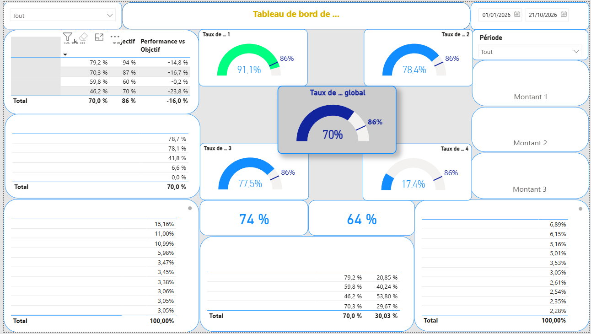
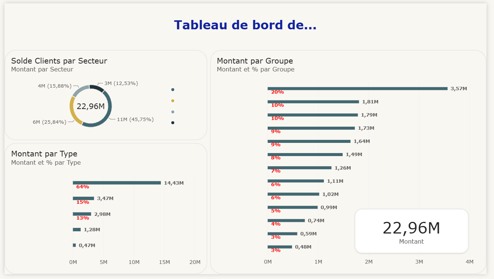
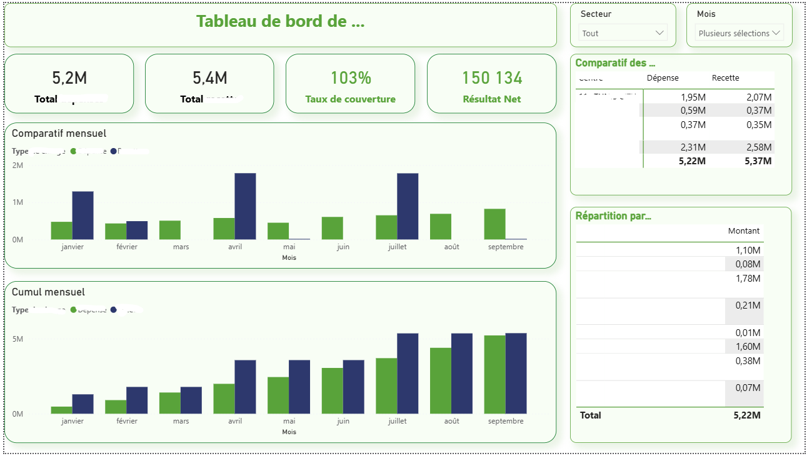
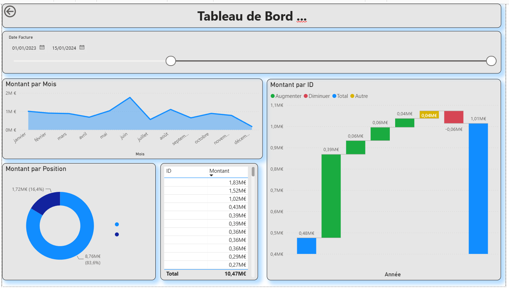
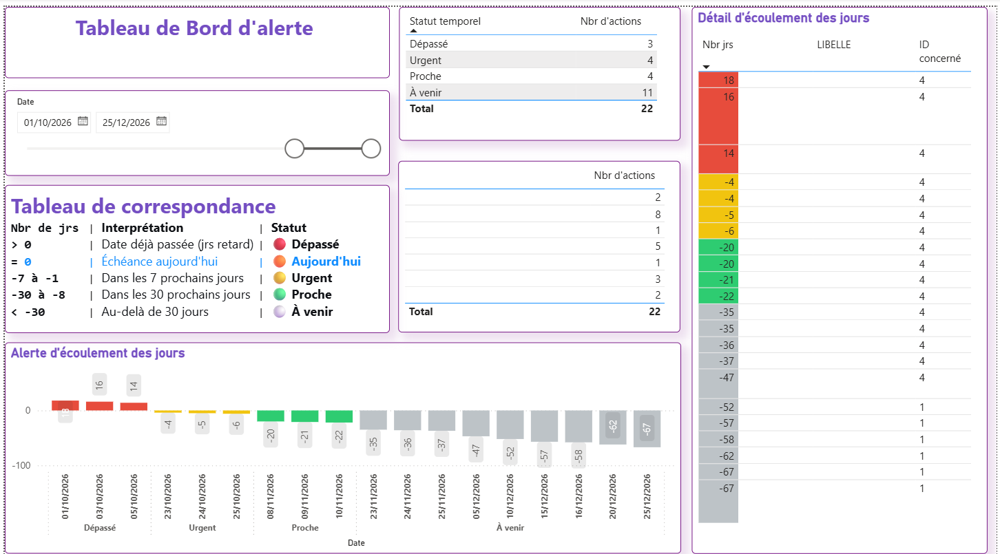

Je transforme les données complexes en tableaux de bord stratégiques interactifs et en décisions pertinentes pour accélérer la performance.
Mon parcours Demander l'accès au CVProfessionnel expérimenté dans le pilotage de la performance, l'analyse des données, le contrôle de gestion et la Business Intelligence. Mon expertise repose sur la conception de tableaux de bord décisionnels, l'automatisation du reporting et l'accompagnement des projets d'amélioration continue.
KPI, Reporting, Budgets, Analyses stratégiques.
Power BI, DAX, Data Visualisation, Reporting.
Prix de revient, Rentabilité, Budgets.
Power BI, Excel, SAP, Navision, QAD, ACD, Cognos et Selligent.





Certifié par le CNFCPP (Centre National de Formation Continue et de Promotion Professionnelle).
Mail : af.boumendil@gmail.com
Tunis - Tunisie Disponible pour missions, accompagnement, reporting, Power BI et pilotage de la performance.